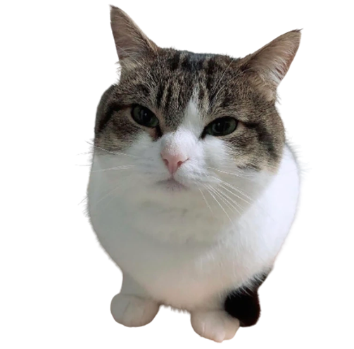

Bem- vindos ao site oficial de BiaBeatrii :D
Abaixo, apresento meus jogos realizados no GameMaker
mIInd., é um jogo plataforma com uma temática nostalgiacore *como diz no nome, uma vibe mais nostalgica realmente, utilizei como inspiração para a arte, jogos indies simples anos 2000 de plataforma como o LunaGame*.
No jogo, você ajudará Silver, a percorrer sua mente, começando pelo lugar que é familiar a ela e que ela tem controle *ou melhor, o Ego* e ir passando pelos outros dois lados da mente, o ID e o Superego. Porém,
há coisas descontroladas durante sua jornada....
Link do jogo, abaixo!
mIInd.